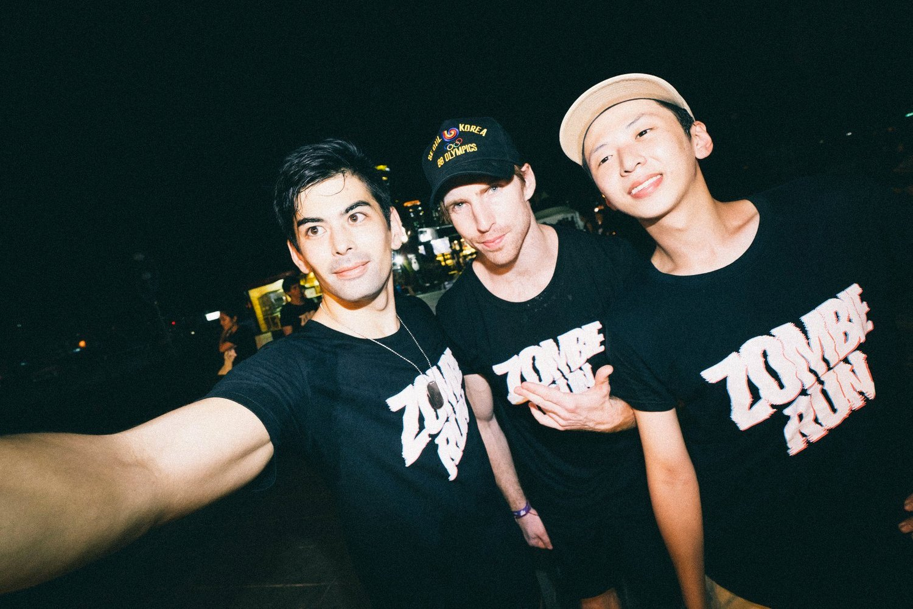
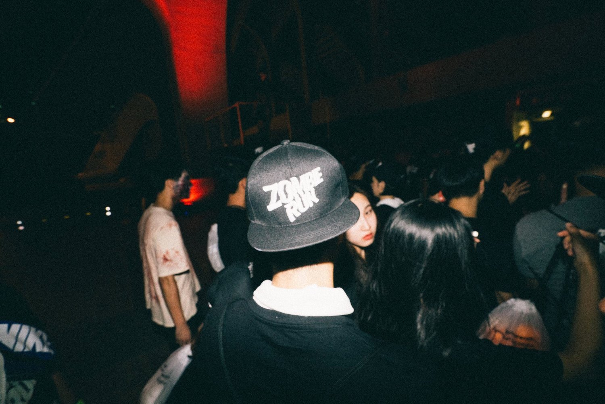
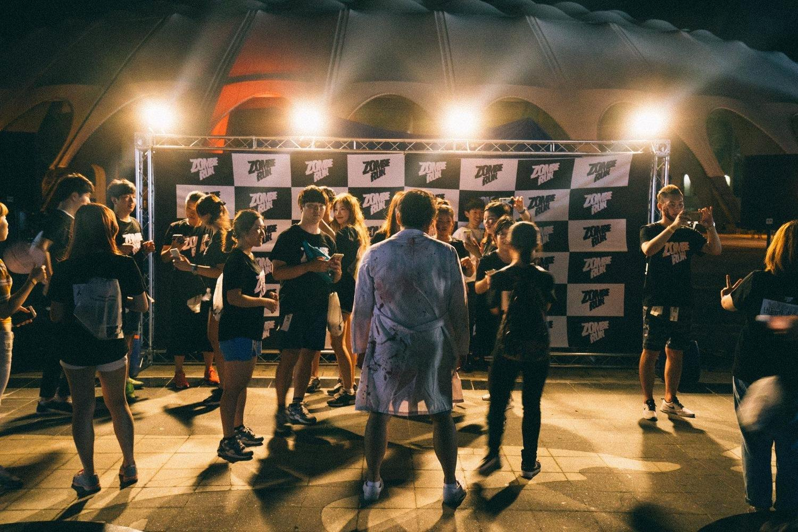
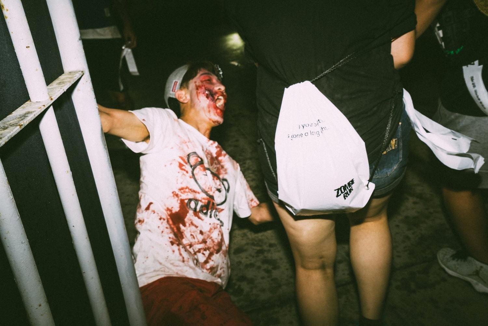
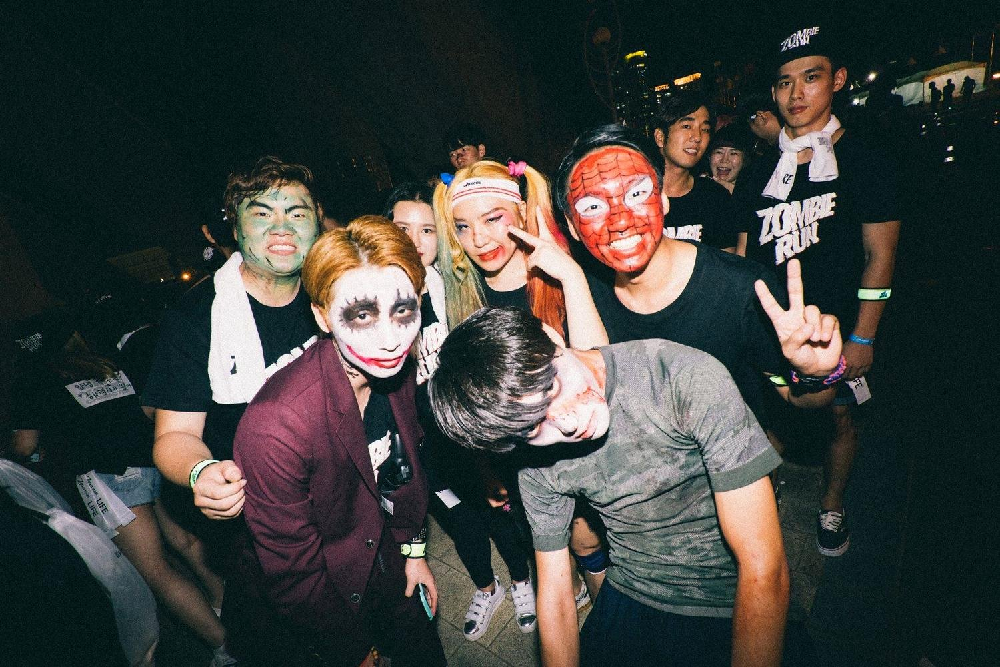
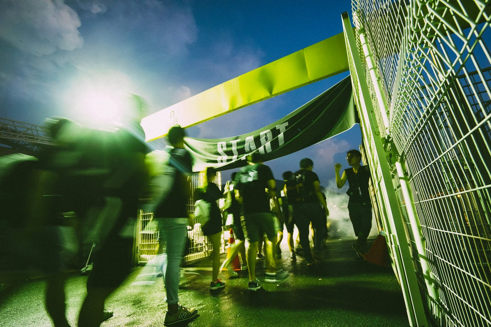
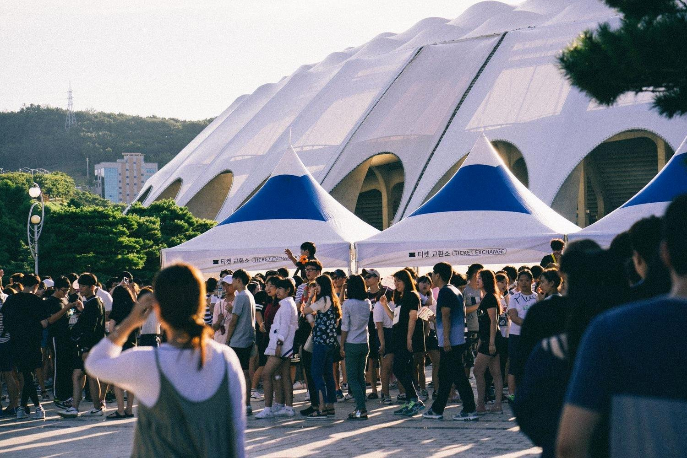
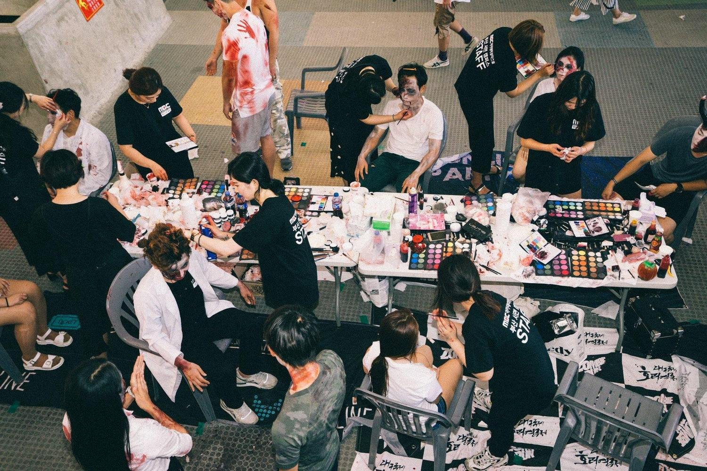
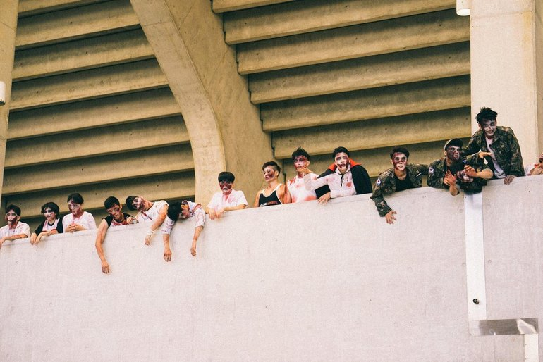
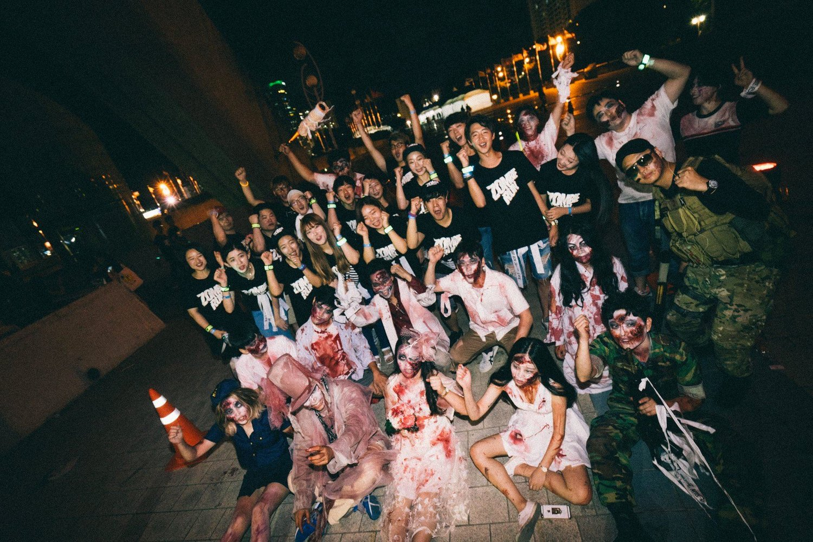

Project Overview
Zombie Run is Korea's first zombie-themed sports festival — a night race where runners are chased through a course by zombie actors in full makeup and costume. The event has grown from a single Seoul edition in 2013 to a national tour across 7 cities, with over 100,000 total participants.
Under the motto "Be Alive", the festival blends the physicality of a fun run with the thrill of a horror experience — creating a uniquely charged atmosphere that demanded a brand identity to match.
The Brief
The challenge was to build a brand identity that could hold its own in two very different contexts: before the event, it needed to generate excitement and urgency — something bold enough to sell tickets and build social buzz. During the event, the brand had to live on merchandise, signage, photo backdrops, and merchandise bags carried by thousands of participants.
The identity had to feel visceral and cinematic without becoming a Halloween cliché — it needed to be wearable, likeable, and memorable even after the adrenaline wore off.


The logo on participant merchandise — T-shirts and snapback caps worn at the event
Logo & Identity
The wordmark was designed to communicate speed, distortion, and danger simultaneously. A glitch-style chromatic aberration effect was applied to the letterforms — a nod to the horror film aesthetic and the disorienting feeling of running through a zombie course at night.
The bold slab serif base keeps the mark highly legible at small sizes on merchandise, while the layered RGB offset gives it the distinctive character that sets it apart from conventional fun-run branding. No colour other than black and white is needed — the effect carries all the energy.

Logo tiled on official photo backdrop — used at all 7 city eventsPackage &
Merchandise Design
Every participant receives a race kit on arrival — a branded drawstring bag containing their wristband, map, and event materials. The packaging needed to function as both a practical carry bag during the race and a keepsake worth holding onto after the event.
The race kit bag, T-shirt, snapback cap, and wristband together form a cohesive participant experience — each touchpoint reinforcing the same visual identity from the moment of check-in through the finish line and beyond.


Left: Branded race kit bag in action at the event. Right: Participants in costume celebrating after the finish.
Brand in the Experience
A key design challenge was ensuring the brand felt consistent across wildly different visual contexts — from sunlit ticket exchange queues to pitch-black night race scenarios. The identity had to hold up in natural daylight, under stage lights, against neon, and on printed signage.
The race start gate, signage, and branded touchpoints created a distinct visual corridor — with the Zombie Run identity marking every moment from arrival to finish line.

Participants crossing the branded START gate — the opening moment of the race

Ticket exchange tents and crowd at one of the 7 city venues — brand deployed at full scale
Behind the Scenes
The event employed hundreds of zombie actors per city — each given professional SFX makeup before taking their positions along the course. The makeup station is a production in itself: a long-table operation with multiple artists working simultaneously, transforming volunteers into convincing monsters.
The brand extended here too — makeup artists wore the Zombie Run crew T-shirt, reinforcing a unified identity behind the curtain as much as in front of it.

Behind the scenes — professional SFX makeup station preparing zombie actors

Left: Zombie actors stationed along the course. Right: Runners and actors together post-event — "Be Alive."
Outcome &
Reflection
Zombie Run grew from a one-city experiment into a national event series that has welcomed over 100,000 participants across Korea. The brand identity became central to that growth — a recognisable mark that people wanted to wear, share, and come back for.
This project taught me that brand design for live experiences operates at a completely different scale than digital product design. Every element — from a logo embroidered on a cap to a banner stretched across a START gate — needs to survive contact with the real world: movement, weather, darkness, and the chaos of thousands of people having the time of their lives.